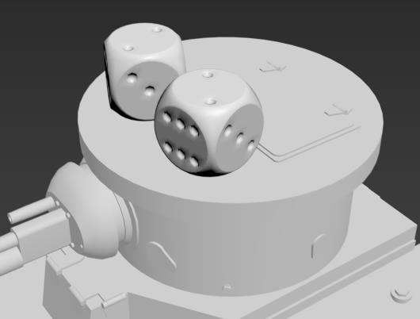
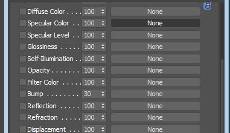
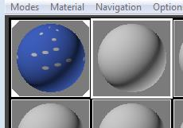
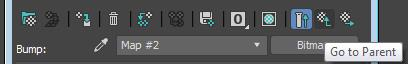
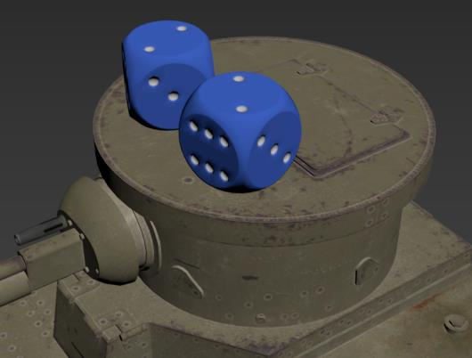
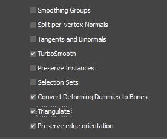
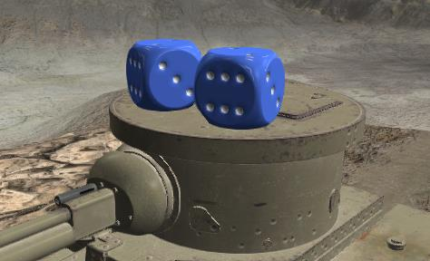
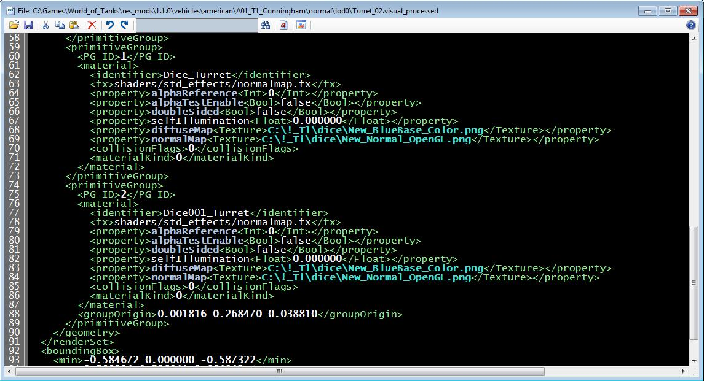
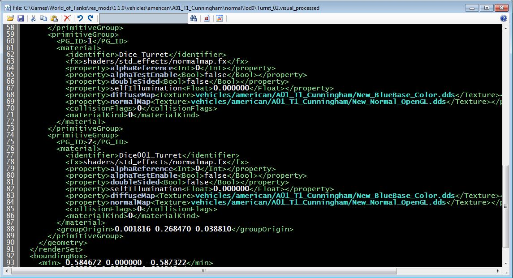
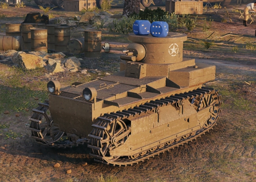

Import the new model.
Scale and translate (move) the model where you want it to sit on the turret or hull. I like to freeze the other tank parts while working on things.
This is how I did it but feel free to play around.

Change the name of the model(s) in Layer Explore so that they have Hull or Turret in their names.. "Hull_obj_1", "Hull_obj_2".. like that. Use Turret if adding a model to the turret.
Tank Exporter uses that name to know what tank component you want this new model attached to.
If you forget to rename it, TE will warn you about unassociated models. You must name it correctly for this to work.
If the materials do not exist for the new model(s), create them and attach their textures.
On the Material Editor in Max, you can use these 3 slots to bind textures.
Diffuse Color, Specular Level and Bump.
Here is a image of the material editor in Max and the Maps roll out. Click on the slot where it says "Diffuse Color"

A window will open.. At the top, Double Click on Bitmap and chose one of the textures.. In this dice example we are doing, there are many texture maps in there with the diffuse maps.
Pick the new_blueBase color.
The material preview should look like this:

Now go back to the Maps roll out.. To get back to it, click the little upward arrow with a checkered background (Go to Parent).

Add a texture to the Bump Slot.
After you have done this correctly, the material editor should look like this.

Change the perspective window in Max, upper left corner, click on standard --> Materials --> Shaded Materials with Maps.
This should enable seeing textures in Max.
Drag the round ball from the Material Editor on to the dice.
In this image, I un-froze the tank components. You should have something similar looking to this:

Depending on if you bind only color or all three, Tank Exporter will edit the visual and change the FX shader to one of three types.
Light Only, Light with Bump, Light with Bump and Specular.
So the binding works like this:
Bind only to Diffuse Color = Light Only shader.
Bind Diffuse and Normal Map = Light and Bump shader.
Bind Diffuse, Normal Map and Specular = Light, Bump and Specular shader.
As I stated, TE will edit the visual file and add entries for each new model and set up the shader to use based on how many textures are bound to the material.
You will need to COPY these textures to the tanks root name folder and edit the Visual to point at them. (I may add code to do this automatically at some point)
Once you have the texture(s) bound to the slot(s), and they are rendering in max, its time to rename our new models.
Add Turret to the names like this:

We did NO editing to any other part of the tank. We don't need to collapse the stack. No changes!
We imported a dice.. cloned a copy, translated and scaled them.. set up their materials, changed their names to include "Turret" and now we are done!
Now Export the FBX from Max.. The Dice are made of QUADS so we need to tell the Max's FBX exporter to turn quads in to triangles!

I export to the same place as the original T1.fbx but named as T1_Max.fbx. Don't over write the original FBX!
Next.. Import the new _Max FBX in to Tank Exporter.
During the import of the FBX, Tank Exporter will figure out that you added something to the turret. In this case, 2 new dice models.
If you set up the materials correctly, you will see them in the render window like this:

Now the not so fun part...
You need to copy the textures for the dice you applied (the color and normal) to the tanks root folder with the other textures that are there.
You can delete all the other .DDS files. We are not doing any texture editing in this tutorial.
If you have not downloaded Swizzler, get it NOW! You will need it for this next step.
Start Swizzler and load one of the .jpg dice images.. We are going to convert them to .DDS
Go to the top menu and select File--> Open Image.
In the Load Image window, at the bottom right, change the file type to PNG.
Navigate to the res-mods folder where the A0_T1_Cunningham is located and load one of the dice PNGs.
Go to File --> Save. A window will pop up..
Select DDS and check Create MipMaps. There is a question mark that will bring up a help window that describes how we need to save files in DDS for the game when clicked.
Click it. If you can't see the help window, close the window using the Task Bar in Windows (right click--> Close), cancel the Save window is Swizzler and Click on Top Most on menu. Click File --> Save again.
When the saving window opens again.. click on the Blue Question mark icon.
That window that pops up will tell you that color maps are type BC1. Close the Help window.
Because we have no HD maps (though you could create them) we are going to write the DDS with MipMaps.. HD maps have no MipMaps.
So.. at this point, BC1 is checked, Save as DDS is checked and Create MipMaps is checked.. Go ahead and click Save.
A window will open and should be pointing to the same place we loaded the PNG from. You wont see any PNGs as the filter is set to DDS in the save window.
You don't need to rename the file.. Just click Save at the bottom.
Do this for the normal map as well.. only, check BC3 as the type before saving. This is because normal maps are in BC3 DDS format in the game engine.
Next we are going to edit the Visual_processed file for the Turret.
If you have not downloaded XML Editor.. get it NOW!
After you install it, it should associate .xml files to open using Xml_Editor. If not, associate it manually.
You can also just start XML_Editor, click the Open File icon and navigate to the folder where the xml is located and open it.
Under the tanks name, got to normal--> LOD0 and open the turret visual.. If you have more than one turret visual, look for the one with the current date.
Once you open it, scroll to the bottom and look for the entries for the Dice.
They should look something like this:

What you what to do is change the path and replace the .png with .dds
Change the path to match the other textures.. (Copy / Paste).
After your edits, it should look like this:

Save the Visual.. File ---> Save ---> Save ---> Yes
At this point.. the only thing left is to load the game and see if your work, works :)
And it does!

You need to reload World of Tanks after adding anything to res_mods. The game only scans that folder at start up!
Hope this all worked out. If not, try again.. Its rather east once you get used to it.